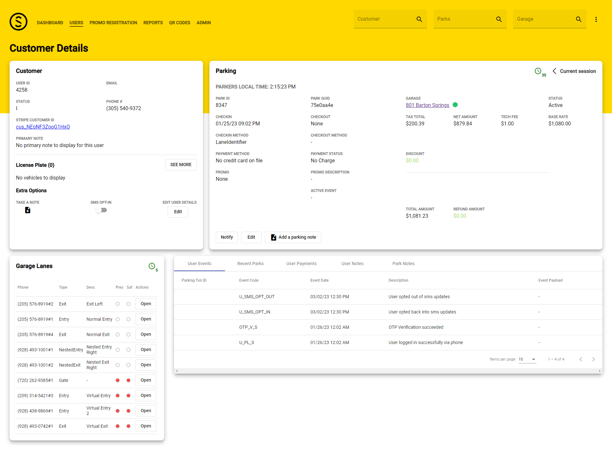

We inherited five years of feature work without a system.
When I joined Spaces, the company was already running contactless parking across New York City, Texas, and the West Coast. The tech worked — phone-based access, payment, exit. The design didn’t. Three apps had been built without design: the admin portal the call center used, the operator portal garage staff used during shifts, and the parker app end users tapped to pay. Five years of feature work, no system underneath.
I came in as senior designer and design manager. Two designers reported to me. The job was to rebuild the design layer, ship better tools, and earn the redesign by getting the system right first.

The call center had inherited a Frankenstein’s monster. Five years of feature accumulation — feature on feature on feature — had produced screens like the one above. Too much information per page. Crappy cards stacked without a system. Flows nobody could trace, nobody could explain, nobody could enter without already knowing they existed.
Operators worked from tablets and laptops. There was no mobile web app — no clean answer to “I’m on the garage floor and I need to fix this now.” The problem wasn’t access. The problem was that every screen had become a graveyard of features added without anyone removing the old ones.
The un-building happened on three fronts at once. We documented what was actually shipping. We built a component library that would evolve into a full system. And we sat with the call center, operations, and business analysis until we agreed on which features were load-bearing and which had grown out of accident.